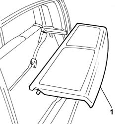

7040H80 parcel rack
- Path
- Procedures > 70 FITTINGS > 7040 BODYSHELL INTERIOR TRIMS AND FITTINGS > 7040H roof panel lining > 7040H80 parcel rack
- Kind
- repair procedure (removal / refitting; the operation number is the code)
- Applies to
- all engines; all production periods
- Interactive page
- https://sloeber94.github.io/elrnDB-fPnd/en/#/2753213
Applies to: all engines; all production periods
 Removing
Removing
 Refitting
Refitting1. Release the rear parcel shelf from the fastenings and remove it.

Applies to: all engines; all production periods
Refitting
RemovingPosition the rear parcel shelf and secure it to the special fastenings.
Topics that link to this page (33)
- 5505A90 rear wiring bundle - r r or replace
- 5570T20 radio aerial amplifier - r r
- 5580C50 (HEAD- BAG MODULE ) (one), left or right - R.R.
- 5580H12 parking obstacle detection device buzzer - r r
- 7010A34 rear side door compartment seal r r
- 7015A24 tailgate hinges - repair or replace with tailgate removed
- 7030B24 sliding roof blind,front or rear - r r
- 7030B47 GUIDE device for sliding roof movement control cables - R.R .
- 7030B50 sun roof guide , one , lh or rh - r r
- 7030B70 sun-roof control switch - r+r
- 7030B74 sun-roof wiring harness - r r or replace
- 7035B14 rear window glass r r includes cleaning of housing
- 7040B06 side trim (one) lh or rh, load compartment/load platform - r r
- 7040H10 roof panel lining - r r
- 7040H16 roof panel lining - r r
- 7040H50 rear panel - r r
- 7040H66 LEFT REAR SIDE TRIM, WITH REAR PARCEL SHELF SUPPORT - R.R .
- 7050A15 SPLIT rear. seat RIGHT BACKREST- R.R.
- 7050A20 one-piece rear seat cushion - r r
- 7050A21 One fixed rear bench seat SPLIT BACKREST left or right RR
- 7050A56 rear seat cushion ribbing - r r
- 7050A58 rear seat squab panel - r + r
- 7050A63 Rear seat/ backrest. - movement control LEVERS R.R.
- 7050A67 Rear seat sliding control DEVICE from luggage compartment - R.R.
- 7050A74 Rear seat BACKREST locking/release CABLE - R.R.
- 7050A75 Rear seat sliding control CABLE - R.R.
- 7050A85 Central BALLJOINT COVER (one) of a rear seat with split squabo, left or right - R.R .
- 7050C05 Single sliding REAR SEAT with split folding squab - R.R .
- 7050C11 Single CUSHION of sliding rear seat - S.R.
- 7050C21 COVER of sole cushion of sliding rear seat - R.R.
- 7050D20 Rear seat CUSHION COVER - R.R.
- 7065B10 l/h or r/h rear safety belt (one) - r+r
- 7065B15 ANCHORAGE ROD for one rer seat belt. on sliding rear seat frame , (one) left or right - R.R.